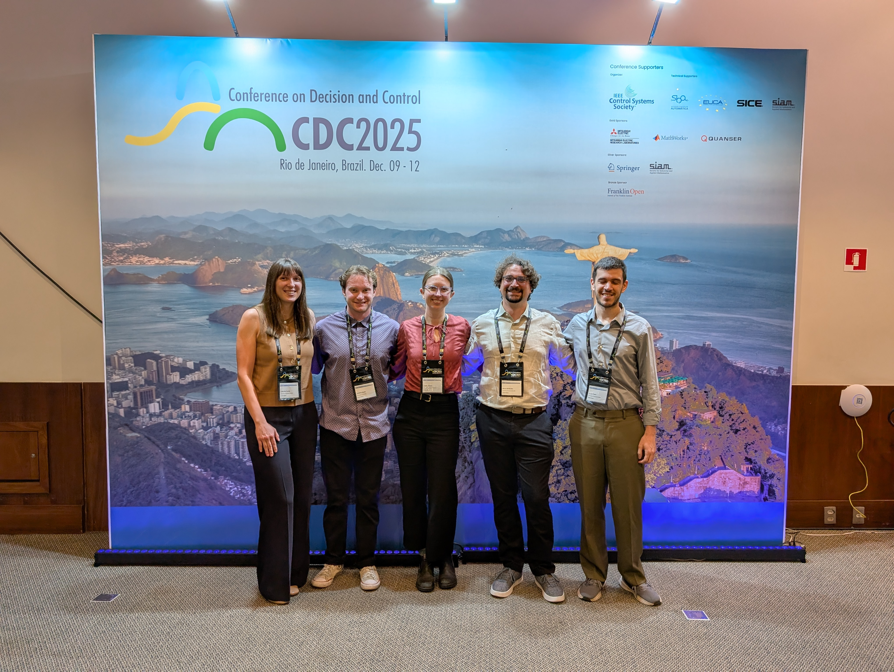

Andy Gusty
Thank you for your interest in my work! I am an incoming Ph.D. student in the Department of Mechanical and Aerospace Engineering at UC San Diego. I recently completed a B.S. in Applied Math and Computer Science at CU Boulder. This summer, I am a researcher in the RIPS program at the Institute for Pure and Applied Mathematics (IPAM) at UCLA.
I do research in control theory and applied partial differential equations. At CU Boulder, I worked with Professors Emily Jensen and Cody Scarborough in Electrical Engineering on two main research directions: (i) optimal design of nonlinear systems such as soft robots and nonlinear transmission lines and (ii) control synthesis under architectural constraints for large, spatially distributed systems such as power networks and waterways.
This fall, I am excited to join Professor Boris Kramer’s group at UCSD as a PhD student to research reduced-order modeling and control methods for additive manufacturing. I am also grateful to the NSF Graduate Research Fellowship Program for supporting my PhD work.
Curriculum VitaeUpdates
-
June 21, 2026I start my work at UCLA this summer as a researcher in the Institute for Pure and Applied Mathematics (IPAM) RIPS program.
-
June 2, 2026I start my work at UCLA this summer as a researcher in the Institute for Pure and Applied Mathematics (IPAM) RIPS program.
-
May 2, 2026I graduated summa cum laude with a B.S. in Applied Mathematics and Computer Science from the University of Colorado Boulder.

-
April 14, 2026I successfully defended my senior thesis on designing nonlinear transmission lines for synthesizing high-powered microwave pulses. Thank you to my senior thesis committee: A, B, C, and D.
-
April 12, 2026I was awarded the CEAS Graduating Student Research Award.
-
April 12, 2026I was awarded the NSF Graduate Research Fellowship.
-
March 25, 2026I accepted an offer to pursue a Ph.D. with Professor Boris Kramer’s research group at UC San Diego.
-
January 21, 2026Our paper "A System Level Approach to LQR Control of the Diffusion Equation" has been accepted for publication in the proceedings of the 2026 American Control Conference.
-
January 8, 2026It was great to present our work "Pattern-forming instabilities in traveling interfaces of reaction-diffusion models for biological growth with chemotaxis" at JMM 2026 with my colleague Jennifer Shim. Thank you to Prof. Paul Carter for his mentorship and support through the Patterns & PDEs REU.

-
December 17, 2025Awarded Honorable Mention for the 2026 CRA Undergraduate Computing Awards. Official announcement here.
-
December 10, 2025Presented “Optimal Control of Soft-Robotic Crawlers Subject to Nonlinear Friction: A Perturbation Analysis Approach” at the 2025 IEEE Conference on Decision and Control.

-
October 17, 2025Our work "Pattern-forming instabilities in traveling interfaces of reaction-diffusion models for biological growth with chemotaxis" has been accepted for presentation at the 2026 Joint Mathematics Meetings, Washington D.C. in January.
-
September 2, 2025Our work “Optimal Control of Soft-Robotic Crawlers Subject to Nonlinear Friction: A Perturbation Analysis Approach” has been published in IEEE Control Systems Letters.